页面开发规范参考
必看！！！！本处不细述，详见bootstrap开发规范： http://codeguide.bootcss.com/#html-syntax
后端开发规范
命名规范
新增表名、字段名、文件名、类名、方法名、变量名等，使用英文驼峰式或带下划线驼峰式，尽量避免拼音，已存在对象忽略。单词或单词缩写要注意可读性高、简洁明了，单词要用常用单词或缩写，太长的单词要简化成缩写，方便其它同事一目了然。
sys_func表规范
功能菜单表sysfunc中菜单规则保持现有递增及上下级编号规则，详见下图所示：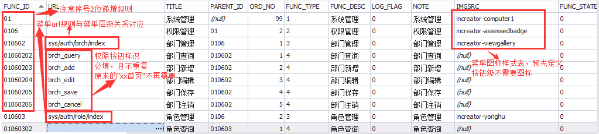
其中菜单图标样式使用，详见"font icon规范"章节
url字段说明：当菜单级别为按钮级别时，url值不需要再填写url，只需要填写一个唯一标识、且能简明表达当前菜单意义的单词组合即可，规则为全小写，单词间用下划线分隔即可。使用时需要结合权限按钮使用，详见“button标签”章节。
系统类方法名命名规则
controller类名命名
业务名+Ctrl，如LoginCtrl.java
controller类跳转目标页面方法命名
to+模块名或者菜单名（首字母大写）+操作页面（Index、Add、Edit），如记名卡发卡： toNamedCardSellIndex
controller类业务方法名规则
操作动作（例如save、edit、delete、sell）+模块名（首字母大写）或者菜单名，如saveRole、delRole
service类名命名
业务名+Serv，如LoginServ.java，loginServImpl.java
系统页面文件名命名规则，统一小写
根据菜单名就可以知道对应的页面。例如：记名卡发卡：namedcard_sell.ftl，机构管理：organ_index.ftl organ_edit.ftl
系统错误码
针对系统代码错误（sys_code_err）对应的字段FIELD_NAME(类中属性名称)规范：按目前的全大写，单词间用下划线分隔，如OFFLINE_ACC_FREEZE。此规定也适用于sys_code_tr表、sys_code表
接口及接口文档出入参规则
所有出入参全部小写+下划线组合，如login_name。
配置文件、配置参数规则
定义或配置参数时，尽量避免1-年，2-月，3-天，应该尽量定义为可读性较高的值，如年-yyyy，月-yyyyMM，天-yyyyMMdd，数据库的【sys_para】配置，和【*.properties】配置都一样规则，如下图所示：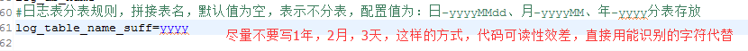
再如，参数“运行模式”，run_mode=product[生产模式] 或run_mode=dev[开发模式]，而不要定义成，1-开发模式，2-生产模式。
数据库的字段定义除外，还是保持原有规则，可使用1、2、3这样的数值状态。代码字典等常量使用
代码中使用到code字典变量的地方，都要使用变量方式，不要写成’4’,’2010’这样的，要统一写成Sys_Code.STATE_ZX这样的方式。如：
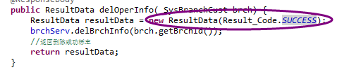
系统时间使用
涉及到需要手动赋值，保存到库中的时间字段统一获取数据库时间方法，一律使用getDatabaseDate，特殊情况除外，如需要临时记录文件日志中需要输出时间，则可以使用new Date方式。
数字小数位数规范
页面上需要展示金额的地方统一格式化到2位小数。特殊情况除外，如话费业务中需要保留三位小数。但数据库中一般精确到分，保存整数。
系统缩写规定：
但缩写要注意可读性高、简洁明了，单词要用常用单词缩写，方便其它同事一目了然。包名、文件夹名一定小写，若有必要再加下划线，主要防止linux平台上文件名大小写敏感造成的bug。特别是从小写改成大写，提交vs平台，或者在window环境中覆盖时是不会变更大小写的，然后再用window的代码更新到linux上时，造成异常。
常用缩写如：sys、om、serv、acc等
完善注释
类文件方法名前必须注释说明该方法用途。参数较复杂的方法，除了写方法功能注释，还要补充说明参数用法，方便其它同事使用时直接使用，否则其它同事再使用时，不知道怎么用，就会直接重写一个功能类似的方法，且有可能稳定性还不如老方法，造成一些重复垃圾代码
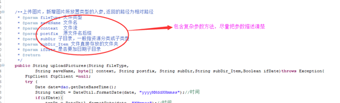
在已经完成的功能代码基础上额外再做修改，必须要注释说明改造原因，以便其它同事再使用到这段代码时，能快速理解改造原因，避免漏改、错改、或误删除，格式可如下
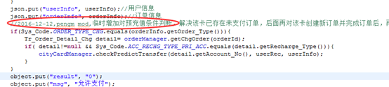
前端页面ftl注释规范，<#---->和<!---->的区别，使用前者。原因使用前者方式注释，编译之后的展示到浏览器端html页面，查看源文件时，注释语句不可见，对系统安全来说比较有用。
正确页面注释例子
<#-- 这里是注释，两边各有一空格 --> <button value="提交">
错误页面注释例子
<!-- 这里是注释，两边各有一空格 --> <button value="提交">提交vsts上的源代码，要添加注释说明，不要出现类似于“代码优化”、“错误修改”等模糊概念的敷衍语句，同理适用于svn，正确用法,如下图
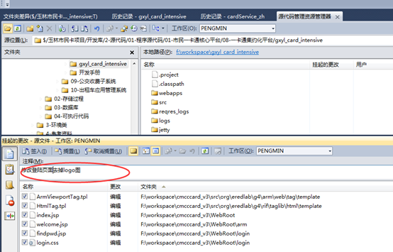
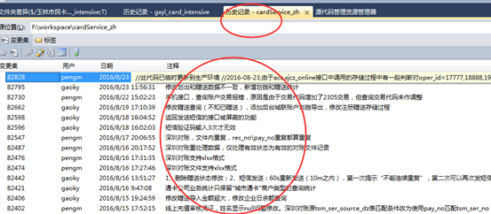
日志输出
去掉无用的System.out.print的打印输出语句，替换为适当使用log4j的日志输出进调试输出。
交易代码、错误码等createcode.java使用规则
添加完field_name后，需要重新生成code，对应的类还是tr_code.java。若增加了code，只需要重新执行一下，再和业务代码一并提交到vs上，保证上传的代码无编译错误即可。同理可一并生成代码字典sys_code.java。CreateCode.java可根据实际情况修改。
习惯用法、用语说明
系统中有些变量、或表名、或字段名、常量名，有些惯用用法，虽然可能不是最标准的英文单词写法，但是由于已经是惯例，因此需要延续用法，如acc表示账户、chg(或charge或recharge都可)表示充值，那么充值撤销就可以用charge_cancel或charge_revoke，以此类推。正常操作和撤销(或退款)操作单词肯定是有关联。
code类数据取值用法
sys_code的code_value：一般固定数量，不会变动的值，只取位数，如0正常1。但若可预见会扩展变化的，如退款原因，则直接使用两位数，如01-库存不足，02-主动退款等。且在新业务扩展时需要新的code时，一定要先检查一下是否已经有存在类似可用的code直接用，如已经有“是否yesorno”，已经可以表示很多场景，如实名标志（实际上这一点做得并不好，多创建了许多重复的功能的code）。
sys_code_tr的tr_code：6位数字，前两位一般表示大类，中间两位表示子类，最后两位递增序号。如
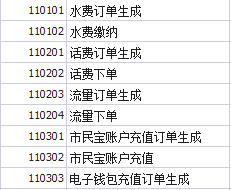
日志使用【待完善】
任何一个业务、请求、接口，需要有痕迹保留，目前记录所有日志信息合租sys_action_log表记录。actionLog对象内容需要在service层中进行补充完善，如下图所示：
异常管理
CustomExceptionResolver类已实现了系统异常的统一封装存库。编写业务代码时如下使用。
ctrl层：正常情况不需要处理异常
serv层：方法最后需要抛出异常
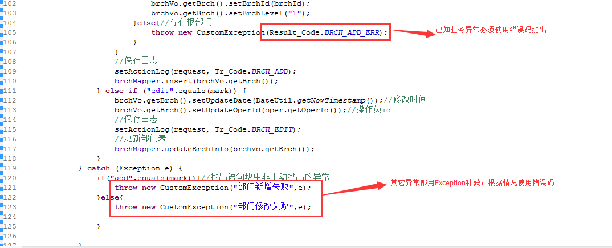
ctrl层规范
- ctrl需要继承BaseCtrl，可调用父类中的一些公共方法。
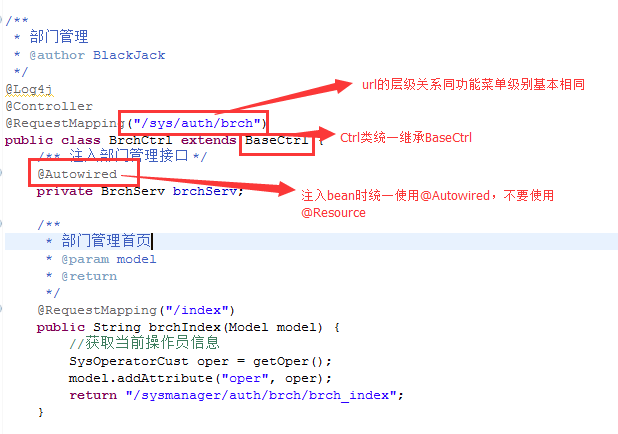
- ctrl中只需要注入serv对象，尽量不要注入mapper(即dao)对象
ctrl中配合url时尽量使用rest风格，如下图所示
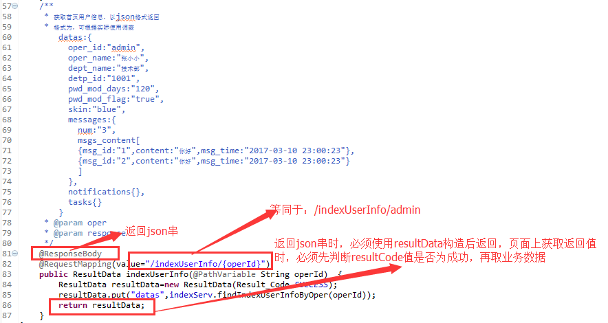
- ctrl正常情况时，不需要捕获异常，所有业务异常由serv层处理，再交给拦截器统一处理。
serv层规范
- serv层需要extends BaseServImpl implements BaseServ，可调用父类中的一些公共方法，如下所示 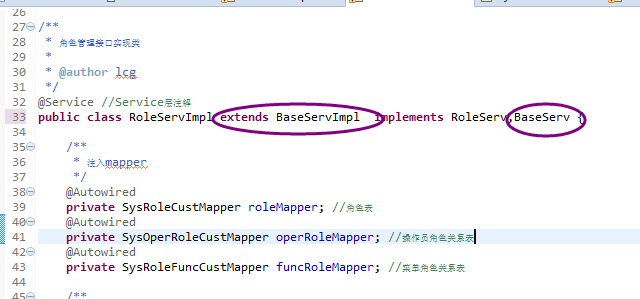
- serv层可注入其它serv，也可以注入mapper(即dao)
serv层事务嵌套：事务方法中执行非事务用法
- 首先定义非事务方法，根据config/spring/applicationContext-transation.xml中的事务配置，以“notran”开头的方法作为非事务管理方法命名。
- 调用时，若事务方法和非事务方法不在同一个service里，则正常调用或使用始可。
- 调用时，若事务方法和非事务方面同一个service里时，要注意，调用方法如下，相当于在AService的带事务的a方法调用不带事务的b方法：
public void a() { //调用代理对象的方法 这样可以执行事务切面 ((AService) AopContext.currentProxy()).b(); }mapper(dao)层规范
- 开发前先使用生成po和mapper，使用方法详见“多数据源及逆向工程配置”章节。
- mapper.xml中的sql语句，要求先在sql开发客户端工具中，编写调整格式化后，再粘贴到xml文件中，避免出现sql可读性很差的语句格式出现。